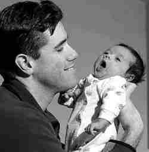

Circumcisions spark debateLocal rate four times national average;
|
|  CREDIT: Nick Brancaccio, Star photo FATHER AND SON: Mike Levesque with his newborn son, Owen, who was circumcised after birth. |
For new parents Michael and Susan Levesque, Windsor's fixation with circumcising its newborns is simply a matter of doing what their ancestors did.
"We just decided to go with it, based on tradition," said Michael, whose son Owen was born Feb. 1. "I was, 'So why not?' "
Just over 50 per cent of the boys born at Windsor Regional Hospital last year were circumcised, well above the national average of 13.9 per cent. The average in Ontario was 16 per cent.
Dr. Tony Hammer, a Windsor family doctor, said his colleagues may be performing the medically unnecessary procedure simply to make a buck. Hammer is critical of a procedure which is also not recommended by the Canadian Paediatric Society.
"There is a financial incentive for physicians, and I wonder if they are fully informing their patients of a lack of medical need," said Hammer.
Obstetricians and the hospital split a $200 fee for each procedure, which is not covered by OHIP.
The head of obstetrics at Windsor Regional couldn't be reached, but a hospital spokesman said all circumcisions are done at parents' request, and rejected Hammer's statement.
"That comment is appalling. In no way do we promote it," said David Musyj, vice-president of corporate services and medical affairs. "In no way do they do it for the money."
He also said the rate charged in Windsor is equal to and in some cases lower than those charged in other hospitals. Circumcision is the surgical removal of the foreskin of the penis.
Last year, there were 4,400 births at Windsor Regional and nearly 50 per cent were boys. Of those, 1,080 circumcisions were performed, representing 51 per cent, hospital officials said.
Jewish and Muslim rites dictate it is done on the eighth day after birth.
According to the Montreal-based Association for Genital Integrity, the Canadian average in 2003 was 13.9 per cent, and 16 per cent in Ontario. Leading the charge was Prince Edward Island at 29.5 per cent, the association said, citing figures from Statistics Canada.
Musyj said the hospital's share of the more than $200,000 charged for circumcisions last year was for supplies, attending nurses and other hospital costs.
Hammer said he regularly advises his pregnant patients not to have the procedure done, but acknowledged some do anyway.
He and Musyj agreed that Jews and Muslims, for example, require the procedure as a matter of religion, and others are doing it just because their parents did. Muslims represent one of Windsor's fastest growing ethnic populations.
In the case of the Levesques, "We didn't really look into the pros and cons," said Michael, although the couple feel that personal sanitation is improved with circumcised males.
"I just felt that guys are lazy, so I wouldn't have him go through that."
Kim and Stavros Kourtsidis of Windsor also decided to circumcise their son Joshua, who was born March 7, because his older brother had undergone the procedure.
"It's cleanliness," Kim said Friday.
But opponents argue there are more medical complications associated with circumcision, than not doing it.
"I don't think physicians are educating patients about the lack of medical need for it. In the majority of cases it is cosmetic," Hammer said.
Dr. Danielle Grenier, of the Canadian Paediatric Society, said the number of procedures is declining in Canada.
"There is no medical indication to have newborn boys circumcised," she said. "There are no advantages to doing it. And with any procedure, there's always a risk.
"It's a painful procedure," she added.
In most cases a local anesthetic is used, and there can also be reaction to medications. "You never know how much you are cutting or how much you are leaving," she added.
"Parent pressure, most of the time," is the reason it is still being done, she said.
The risks may be small but they are there, Hammer said. "They do exist. When they occur, one can argue they were avoidable.
"Any ethical physician refers to the recommendations of the Canadian Paediatric Society," he said.
Musyj said Windsor's "multicultural" population partly accounts for the high local rate, as well as local tradition.
"Windsor being the community it is, I think that has a lot to do with it," he said of the tradition of circumcising boys. Musyj said most parents know the sex of their child well before delivery, and usually have enough time to decide on the procedure. It is done before the baby goes home.
Grenier of the pediatric society said a lot of information is available on the subject.
"Heaven knows what has been published over a little piece of skin," she said.
According to the Canadian Paediatric Society, of every 1,000 boys who are circumcised:
http://www.cirp.org/news/windsorstar03-19-05/